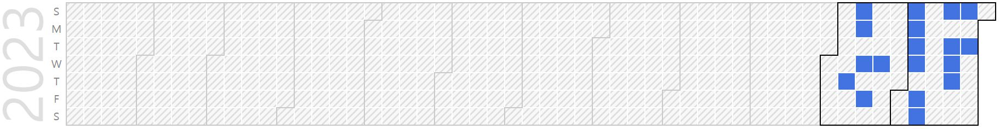

Gihyeon Jeon (M.S Graduate Student)
Master Graduate Student (M.S), Embedded System-on-Chip Integrator |
Repository Commit History
|  |
Introduction
Full Bio Sketch
Mr. Jeon received his B.S. degree in Electronics Engineering at Kyungpook National University, Daegu, Republic of Korea in 2024. He is currently a master course student in Electronics Engineering at Kyungpook National University, Daegu, Republic of Korea. His research interests span from low-level hardware design to the domain of making hardware function. He has designed fast ternary ripple carry adder by constructing ternary logic gates and is currently conducting research on the efficient utilization of on-chip memory, specifically scratchpad memory.
Research Topic
Ternary Computation on VLSI
 With the rapid advancement of artificial intelligence and AI technologies, there has been a significant increase in operational workloads. Consequently, there is a need to handle these increased workloads within a fixed and precise timeframe. Anticipating that representing large numbers with fewer digits could increase operation speed, I constructed ternary logic gates and used them to create a ternary ripple carry adder. To construct this system, I employed Verilog RTL simulation and PSpice simulation. In PSpice, I designed each logic gate and measured their delay times. Using Verilog VPI, I conducted an overall performance comparison of the adders. The results confirmed that the designed ternary ripple carry adder exhibited approximately 75% better performance compared to the binary ripple carry adder. Due to the faster operation speed, I assumed that there would be a range where energy consumption is more advantageous and calculated that range. In the future, I plan to leave room for further work, such as designing layouts or researching ternary logic gates that do not follow the conventional form of binary logic gates.
With the rapid advancement of artificial intelligence and AI technologies, there has been a significant increase in operational workloads. Consequently, there is a need to handle these increased workloads within a fixed and precise timeframe. Anticipating that representing large numbers with fewer digits could increase operation speed, I constructed ternary logic gates and used them to create a ternary ripple carry adder. To construct this system, I employed Verilog RTL simulation and PSpice simulation. In PSpice, I designed each logic gate and measured their delay times. Using Verilog VPI, I conducted an overall performance comparison of the adders. The results confirmed that the designed ternary ripple carry adder exhibited approximately 75% better performance compared to the binary ripple carry adder. Due to the faster operation speed, I assumed that there would be a range where energy consumption is more advantageous and calculated that range. In the future, I plan to leave room for further work, such as designing layouts or researching ternary logic gates that do not follow the conventional form of binary logic gates.
Scratch Pad Memory (SPM) Controller
 To overcome the large area and energy consumption of cache memory, the scratchpad is considered in the LMStr (Local Memory Store) structure. Various measures are prepared to overcome the fragmentation issue that arises in this context, and a performance comparison is conducted. The performance is evaluated based on the SST (Structural Simulation Toolkit). Cache memory, being controlled by hardware, incurs significant hardware burden and power consumption. This led to the emergence of scratchpad memory. However, scratchpad memory, being software-controlled, increases the burden on programmers and compilers. Therefore, the use of scratchpad memory based on local memory store (LMStr) has been proposed to reduce the burden on programmers and compilers due to conventional scratchpad memory. However, this structure cannot be free from the fragmentation problem due to storing variable block sizes in the data storage space. As a method to use the same memory space more efficiently, I propose an LMStr structure that applies paging. This structure stores data blocks of a fixed size, not variable size, thus it is free from external fragmentation and has a higher hit ratio due to data locality. And the proposed structure is tested in the gem5 simulation environment. To simulate this structure in gem5, a new structure that does not affect the results of the simulation enables this and allows obtaining the desired outcomes.
To overcome the large area and energy consumption of cache memory, the scratchpad is considered in the LMStr (Local Memory Store) structure. Various measures are prepared to overcome the fragmentation issue that arises in this context, and a performance comparison is conducted. The performance is evaluated based on the SST (Structural Simulation Toolkit). Cache memory, being controlled by hardware, incurs significant hardware burden and power consumption. This led to the emergence of scratchpad memory. However, scratchpad memory, being software-controlled, increases the burden on programmers and compilers. Therefore, the use of scratchpad memory based on local memory store (LMStr) has been proposed to reduce the burden on programmers and compilers due to conventional scratchpad memory. However, this structure cannot be free from the fragmentation problem due to storing variable block sizes in the data storage space. As a method to use the same memory space more efficiently, I propose an LMStr structure that applies paging. This structure stores data blocks of a fixed size, not variable size, thus it is free from external fragmentation and has a higher hit ratio due to data locality. And the proposed structure is tested in the gem5 simulation environment. To simulate this structure in gem5, a new structure that does not affect the results of the simulation enables this and allows obtaining the desired outcomes.
Compiler-Assisted Multithreaded SPM Management
 Unlike cache memory, scratchpad memory is controlled by the user and software. Although it is true that it can be difficult for users to handle, it also comes with advantages. Unlike cache memory, it allows for addressable access, giving users flexibility in accessing it. In specific situations such as with automotive MCUs, IO processing increases significantly. Since IO processing consumes a lot of time, issues related to shared memory access in multithreading must be handled carefully.
Therefore, in special situations with frequent IO communication, scratchpad memory is treated as shared memory, and access issues are addressed accordingly.
Unlike cache memory, scratchpad memory is controlled by the user and software. Although it is true that it can be difficult for users to handle, it also comes with advantages. Unlike cache memory, it allows for addressable access, giving users flexibility in accessing it. In specific situations such as with automotive MCUs, IO processing increases significantly. Since IO processing consumes a lot of time, issues related to shared memory access in multithreading must be handled carefully.
Therefore, in special situations with frequent IO communication, scratchpad memory is treated as shared memory, and access issues are addressed accordingly.
Publications
Journal Publication (KCI 1)
Gihyeon Jeon and Daejin Park. Defragmentation-based Efficient Allocation on On-Chip Scratch-Pad Memory for Lightweighted Microcontrollers (KCI) Journal of the Korea Institute of Information and Communication Engineering, 2024.
Conference Publications (Intl. 3)
Gihyeon Jeon and Daejin Park. Speed-Area-Power Efficient Ternary Logic Gate Implementation based on Typical MOS transistors In International Conference on Electronics, Information, and Communication (ICEIC 2024), 2024.
Gihyeon Jeon and Daejin Park. Defragmentation-based Efficient Allocation on On-Chip Scratch-Pad Memory for Lightweighted Microcontrollers In IEEE COOLChips 2024, 2024.
Gihyeon Jeon and Daejin Park. Optimizing Multithreaded Access to Global Variables in SPM through Compiler-Enhanced Dependency Analysis In IEEE Region 10 Conference 2024 (TENCON 2024), 2024.
Participation in International Conference
IEMEK Fall Conference 2023, Jeju, Korea
IEEE ICMU 2023, Kyoto, Korea
IEEE ICEIC 2024, Taipei, Taiwan
IEEE COOLChips 2024, Tokyo, Japan
IEEE TENCON 2024, Singapore, Singapore
Last Updated, 2024.10.12